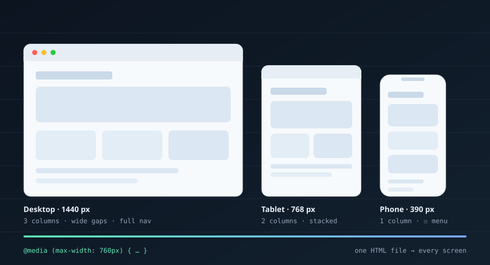

Practice page: proof that it works
The notes explain; this page demonstrates. Everything below is built with HTML and CSS only — including the parts that look like they need a script. The source is short enough to read.
Cards that move on hover
Move the pointer over them: the card lifts, the border lights up, the shadow deepens. Two properties and :hover.
Lifts 6px
transform: translateY(-6px)
And scales slightly
scale(1.02)
Border lights up
border-color: var(--accent)
.hover-demo { transition: transform .25s, box-shadow .25s; }
.hover-demo:hover {
transform: translateY(-6px) scale(1.02);
border-color: var(--accent);
}
Tabs without JavaScript
Click the three links: the panel changes. The trick is that the link jumps to #tab-2, and CSS shows only the panel that is targeted.
What HTML does
It classifies the content: this is a heading, this is a paragraph, this is a list, this is a link. Without it the browser has no idea what matters.
What CSS does
It decides spacing, colour, size and arrangement. Same HTML, different stylesheet — a different website.
What publishing does
Push the folder to a GitHub repository, switch Pages on, wait a minute, and the URL works. That is the whole deployment story for a static site.
.tab-panel { display: none; }
.tab-panel:target { display: block; }
#tab-1 { display: block; } /* first one by default */
.tabs:has(a:target) ~ #tab-1 { display: none; } /* hide it once another is picked */
Progress bars
Width plus @keyframes. Reload the page and they grow from zero.
All three share the same .progress > span structure; only width and animation-delay differ.
Shapes drawn with CSS
No image files — borders, radii and gradients.
Triangle: three transparent borders. Circle: border-radius:50%. Chequerboard: two 45° gradients offset by half a tile.
Gallery with figure and figcaption
Three SVGs I drew myself: small files, sharp at any size, no copyright questions.


background-repeat.for future work
Tables are for data
Not for layout. This one lists the six files of this site.
| File | Content | Technique used |
|---|---|---|
index.html | home page and course coverage | semantic regions, Grid cards, table |
about.html | about me | description list, Flex, progress bars |
html.html | HTML notes | contents anchors, accordion, code blocks |
css.html | CSS notes | figures, gradients, media queries |
practice.html | this page | transitions, :target, keyframes, shapes |
contact.html | contact | form, mailto: link |
details and summary
HTML has a built-in collapsible block. Click a heading to open it. No script involved.
Why no JavaScript?
The brief asks for HTML and CSS only. More practically: everything this site needs — navigation, tabs, collapsing sections — is already supported by the browser, so a script would be a detour.
What if a later project needs interaction?
Then I learn JavaScript properly. Structure and style first; otherwise the script is just a harder way to fight myself.
What was the hardest part?
Keeping the navigation identical. Six files each carry a copy of the menu, so one change is six edits. In the end I perfected the bar on one page, copied the whole block into the other five, and only changed where aria-current sits.